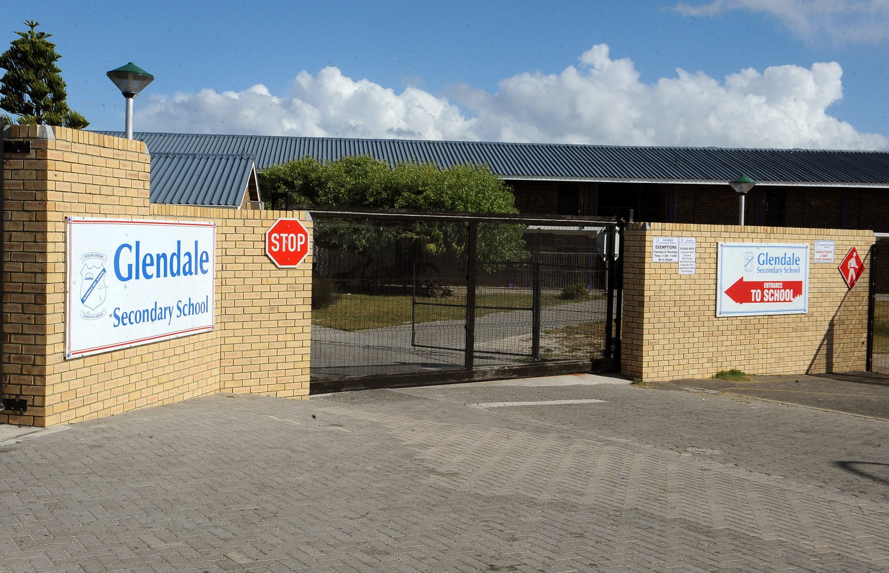

Employment History
Codespace
Web Development Teacher (Currently still undergoing)
13-April-18 –Duties being performed:
lessons- Have interactive lessons with students, help and assist them with coding challenges and monthly projects. One of the duties is to ensure students understand all the coding languages and frameworks covered in the course. (Languages are HTML, CSS, JAVASCRIPT, RESPONSIVE DESIGN, SASS, AND NODE.JS)
Bootcamps- Assist with regular bootcamp to ensure that applicants are competent of completing a 6 months coding course (bootcamp covers activities such as problem-solving, typing speed, paying attention to detail and basic coding skills).
Spine Road
Administration Clerk (3-month internship)
13 Feb ‘17 – 13 April ‘17Duties being performed:
I completed duties such as taking telephone calls, relay messages, receive and dispatch mail.Arrange and participate in meeting.Data Capturing such as typing letters, reports, timetables, class lists, agendas, curriculum documents and updating weekly registers.Photocopying collating, assembling and distributing of documents and circulars.Assisting the school secretary/ admin manager to maintain the filing system.Maintaining manual and computer records of pupil’s personal details. Assist teachers to keep records of learner’s attendance and absenteeism.Assist with supervision of learners in emergencies. Invigilate during examinations and tests. Provide teacher with admin support.
St Timothy Catholic Church
Volunteer
14 April ‘16 – 10 Oct ‘16Sunday School Catechist
Eduaction History
Salesians Life Choices Academy — Web Development
(6 months full-time course): 2017The Life Choices Academy is a full-time program which empowers youth from the Cape Flats with life, practical and professional development skills. We did intensive study of the following web development languages: HTML, CSS, jQuery, JavaScript and Sass. As part of our professional development, we had the opportunity to use online resources such as MOOCs, were taught Design Thinking and made use of resources for personal reflection, such as DISC profiles and SMART goal setting. Taking part in this program has really enhanced my self-awareness in knowing myself better and also guiding me to my purpose in life. This course has taught me to think more analytically and see things more broadly. I was exposed to various seminars, lectures and leadership programs. This helped me make my own decisions in life allowing me to take responsibility for my actions and give me sense of independence.
Glendale Secondary Senior School
National Senior Certificate
Jan ‘12 – Dec ‘16Highschool Course:
Computer Application Technology (2014 - 2016):
Microsoft Word, Excel, PowerPoint, Access, Web design
Leadership role:
Under 19 Rugby Vice Captain (2013 - 2016)
